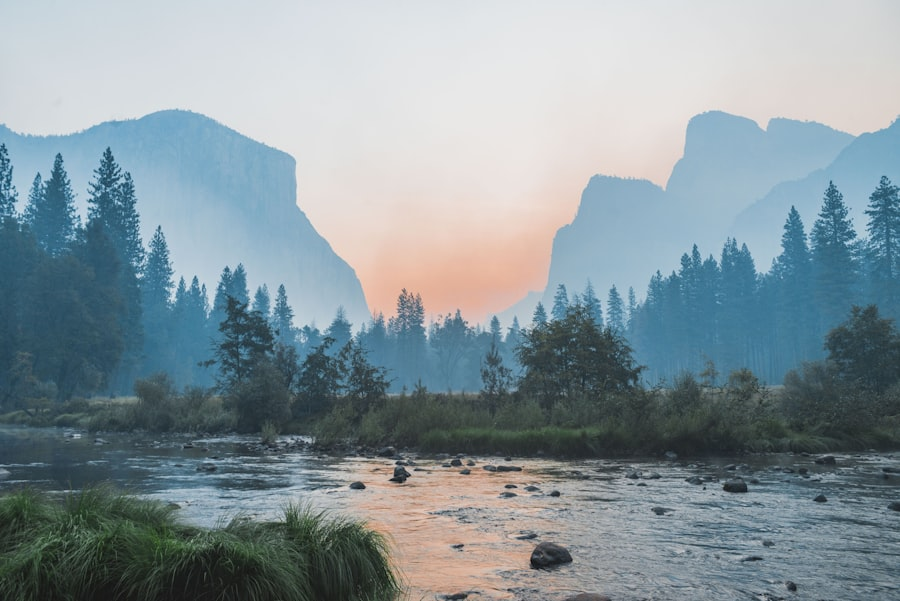
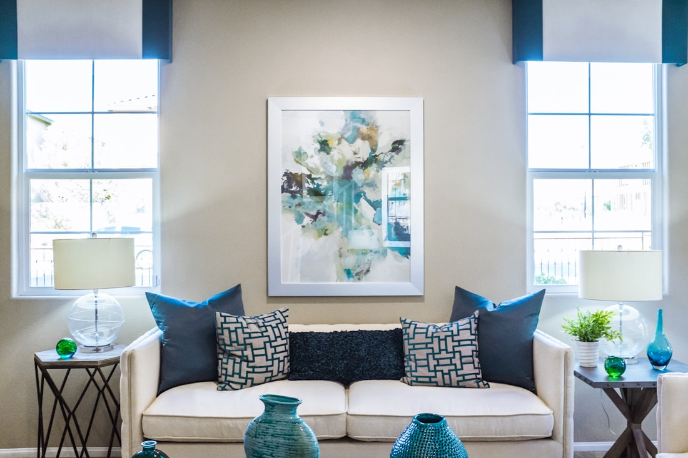

The Quiet Weekend
A short reset for people who can't take a week. Gentle hatha, silent mornings, and two nights' good sleep.
£540
Details →
Residential yoga & rest · The Welsh Marches
A small retreat on twenty acres of old farmland, where the days are slow, the rooms are quiet, and nothing is asked of you but to arrive.
A place to come undone
Fallow is not a place to fix yourself. It is a place to stop trying for a while.
We keep the groups small and the schedule honest. Two yoga practices a day, long unhurried meals from the kitchen garden, walking the lanes, and great stretches of time with nothing planned at all. The land here was farmed for three centuries and then, deliberately, left fallow — allowed to recover its own quiet. We think people need the same.
Read the ethos →What's on the land this season
Every program runs end to end — arrive Thursday, leave Sunday, or stay the week. Linens, all meals, and every practice are included.

A short reset for people who can't take a week. Gentle hatha, silent mornings, and two nights' good sleep.

Our cornerstone week. Daily practice, restorative evenings, garden meals, and one full day of held silence.
A program timed to the first growth — early walks, planting in the kitchen garden, and yin practice at dusk.
The space
Eight rooms in the old farmhouse and the converted granary, each kept simple — wool blankets, lime-washed walls, a window that opens onto the fields. The practice barn was a working threshing barn until the 1970s; now its oak frame holds a heated oak floor and a whole wall of north light.
No televisions. No clocks in the bedrooms. A small library, a wood stove, and a long kitchen table that seats everyone at once.
Tour the space →
I came carrying a year I hadn't put down. By the third morning I could hear the rooks again, and I realised I'd stopped bracing.Imogen R. — Slow Return, October
The people who hold the days
Our faculty is small and stays small. You'll practise with the same two or three people all week, and they'll learn how you move.
Founder · Hatha & Restorative
Twenty years of teaching and a deep distrust of the word "more." Maren leads the slow morning practice.
Breath & Stillness
A former emergency physician who left medicine for the breath. Tomas holds the silent sittings and the long exhale.
Yin & Somatics
Ana teaches the dusk yin and the floor work, with a gift for making a roomful of strangers feel unhurried.
The next openings
Programs run from March through November. Rooms are few and they go quietly — most seasons are reserved months ahead.